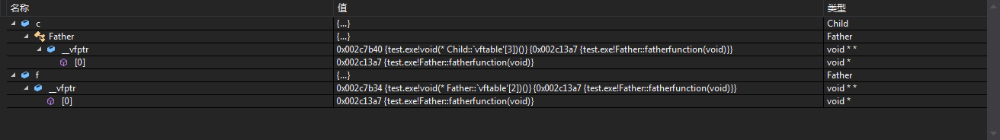
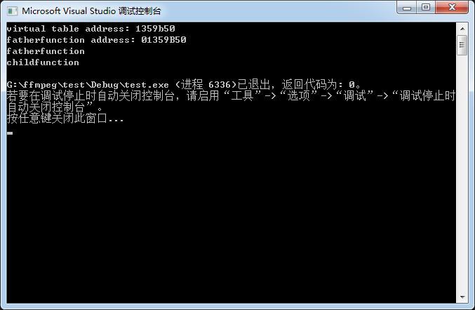
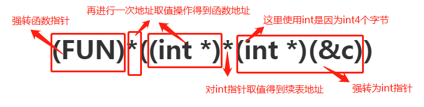
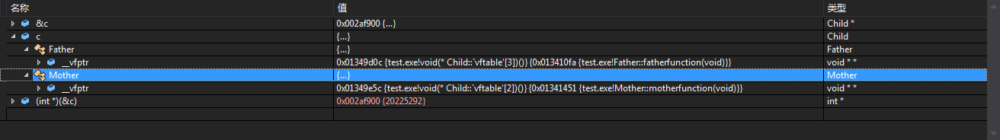
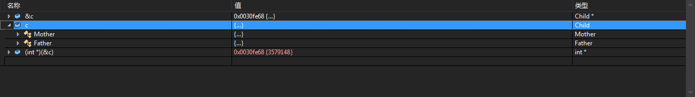

C++的多态分为动态多态和静态多态，其中静态多态主要靠重载和模板来实现，而动态多态则主要靠继承来实现了。
那么静态和动态，怎么算静，怎么算动呢？静态多指编译期能决定的事情，而动态多指运行时才决定的事情。例如重载，在编译期生成符号的时候就已经确定不同的函数了，而继承的重写（override）则是在运行到具体的代码位置确认指针内部的虚函数表指向的函数地址时才知道执行哪个函数，被称为动态多态。
虚函数表指针指向虚函数表，虚函数表每个类一个，如果是单继承的话子类和父类的虚函数表会合体，下面是一个简单的例子
class Father {
public:
virtual void fatherfunction() {
cout << "fatherfunction" << endl;
}
};
class Child : public Father {
public:
virtual void childfunction() {
cout << "childfunction" << endl;
}
};
Child c;
Father f;用过调试器查看变量内部可以看到Child类的对象c中有父类的虚函数表指针，但是自己的呢？单纯一个父类对象也有自己的虚函数表指针，为什么Child类的对象自己的虚表指针不见了呢？

那么一个猜测就是子类的虚函数表和父类的虚函数表合体了，这个猜测到底正不正确呢？得想个办法验证一下！
一般虚表指针存放在对象地址空间的头4位，这里先取得上图中看到的Father的vptr指向的虚表，虚表地址的获取需要获取虚表指针中存放的值。
cout << hex << "virtual table address: " << *(int *)(&c) << endl;然后是获得fatherfunction函数指针的地址
cout << hex << "fatherfunction address: " << (int *)*(int *)(&c) << endl;typedef void(*FUN)();
Child c;
cout << hex << "virtual table address: " << *(int *)(&c) << endl;
cout << hex << "fatherfunction address: " << (int *)*(int *)(&c) << endl;
FUN father_func = (FUN)*((int *)*(int *)(&c));
FUN child_func = (FUN)*((int *)*(int *)(&c) + 1);
father_func();
child_func();得到的结果如下图所示

虚函数表中存放的紧接着father_func函数地址的下一个就是child_func的地址，因此是合并了。
PS：简单解释一下取函数指针的代码

续表为手误，是虚表。图不好改就不改了
静态成员不属于任何对象，所以就算加上了virtual也没有意义
静态函数没有this指针，虚函数表存在于对象的地址空间，使用对象的this指针访问，但是静态函数没有this指针故也无法访问虚函数表。
const成员函数要求使用者为const类对象，再换一个说法就是要求this指针为const，但是静态函数没有this指针，故使用const关键字修饰静态函数毫无意义
PS：volatile是一个关键字用来表示当前语句不会被编译器优化，且要求每次直接读值
多继承时，对象内部会有多个虚表指针指向多个虚函数表，如果自己也能继续继承，那么自己的续表会和第一个虚表合体，虚表合体这个在上面已经描述过了，多个多继承的话也会合并，是会和内存空间的第一个虚表合并。
class Father {
public:
virtual void fatherfunction() {
cout << "fatherfunction" << endl;
}
};
class Mother {
public:
virtual void motherfunction() {
cout << "motherfunction" << endl;
}
};
class Child : public Father, public Mother {
public:
virtual void childfunction() {
cout << "childfunction" << endl;
}
};把类的继承关系改成这样，让Child类继承自Father和Mother，此时Child的对象c中有几个虚表指针？

答案是两个分别是两个类的虚表指针，此时为了判断合体，还是用上面提到的方法，也能成功，发现子类的虚表是存在头4个字节的虚表指针所指向的虚表内的。
而这个虚表指针的先后顺序和声明继承的顺序一致，public Mother如果在public Father之前的话就会变成如下图所示
